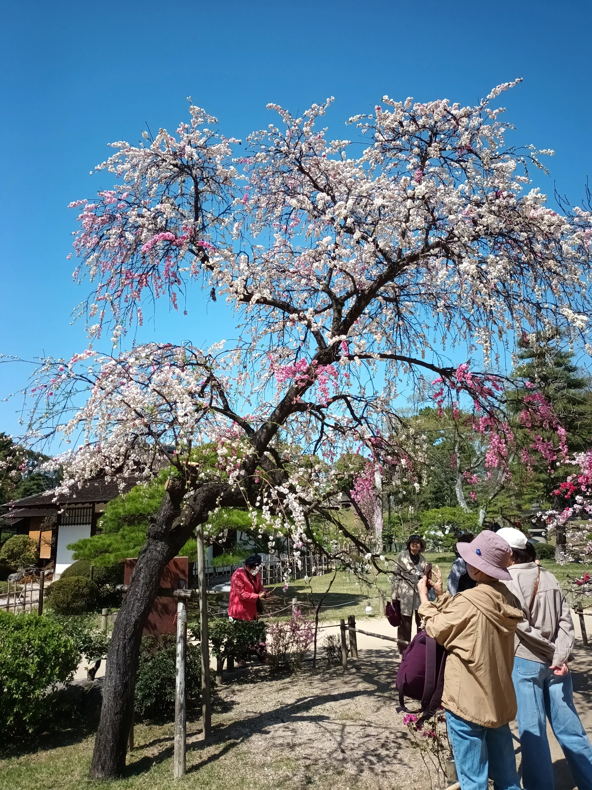
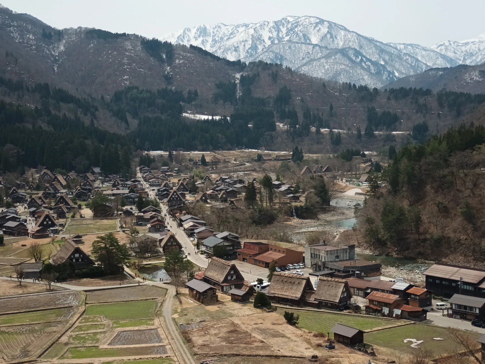
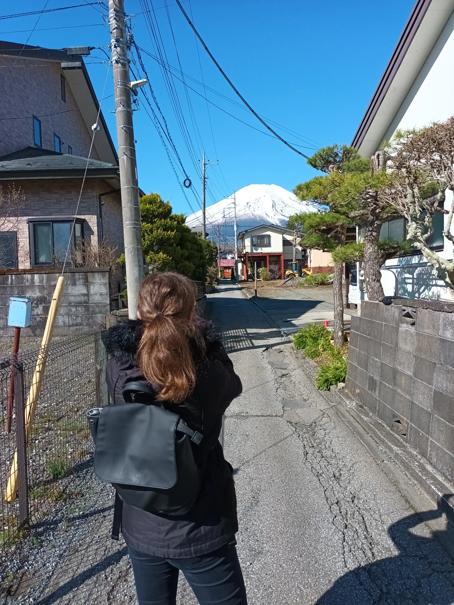
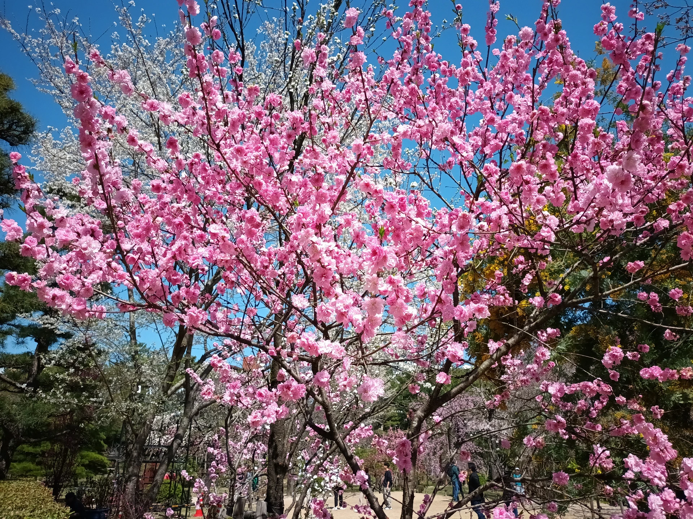
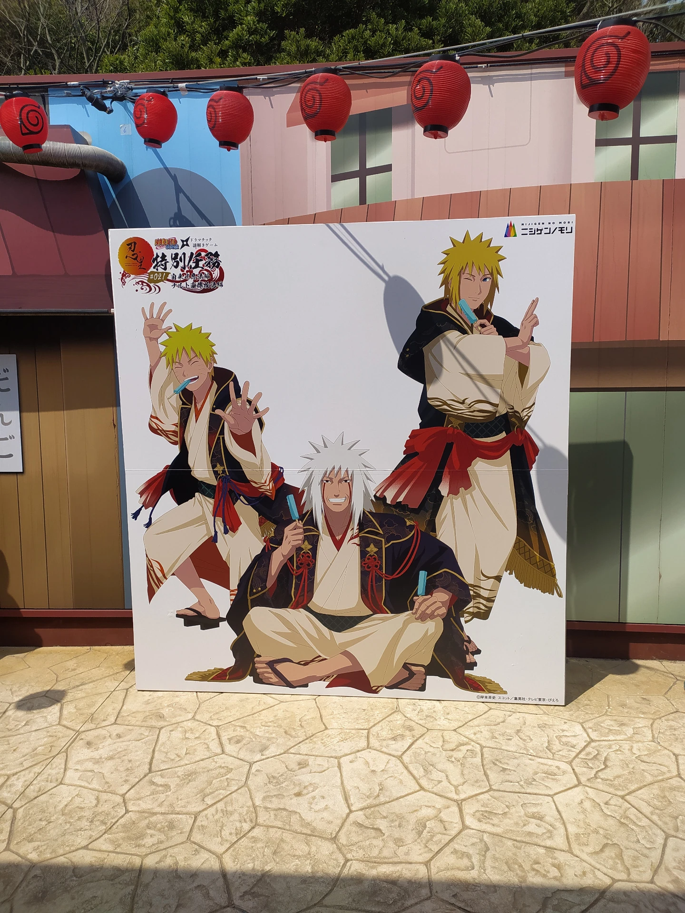
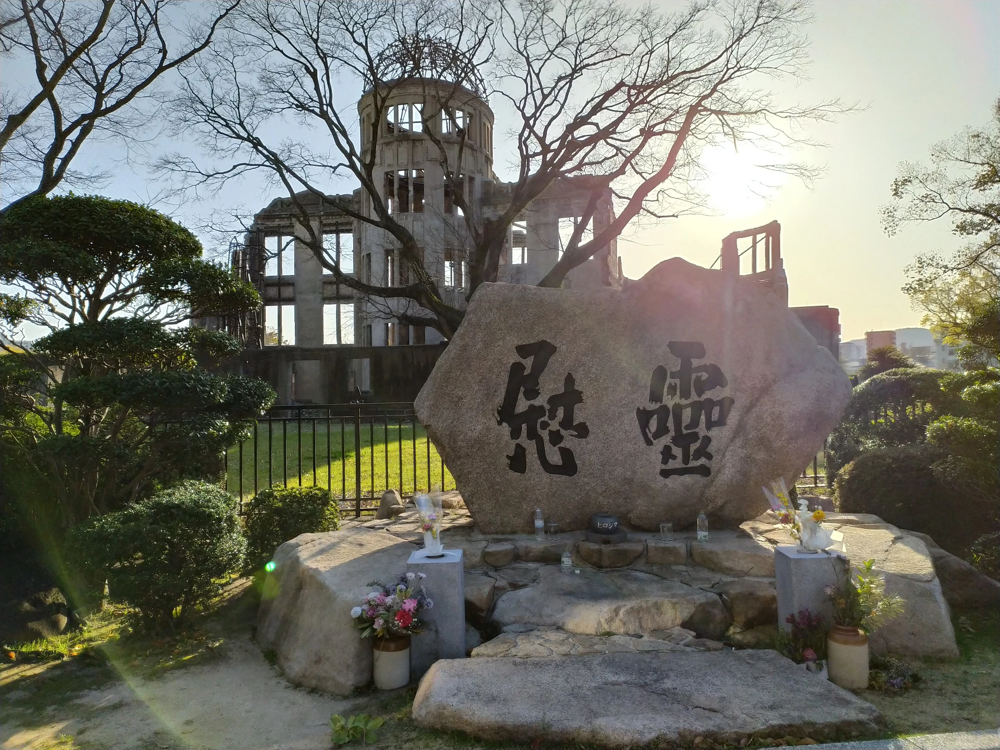
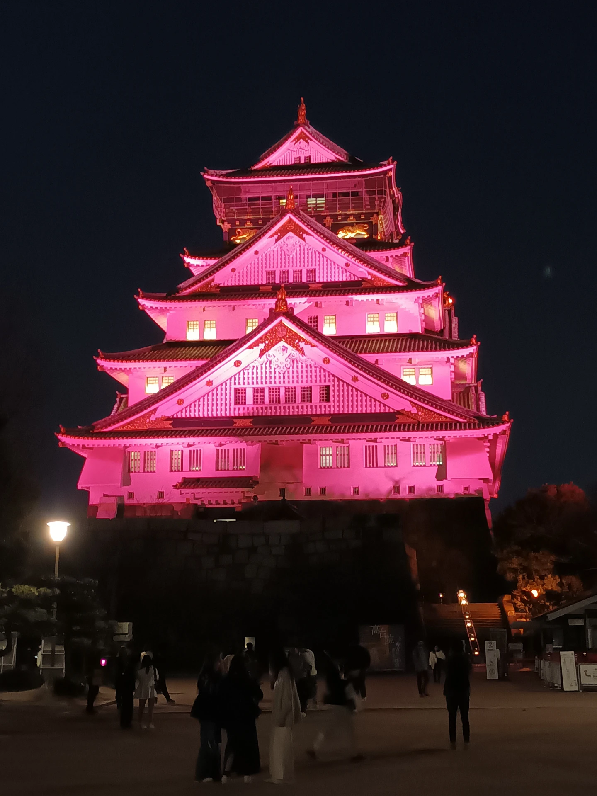

Aneb jak se co nejlépe připravit na dalekou cestu do Japonska na vlastní pěst.

Shukkeien garden (Hiroshima)
BLOGProvedu Vás všemi krásami i úskalími tak, abyste byli co nejlépe připraveni prozkoumat tuto fascinující a jedinečnou zemi bez nutnosti cestovní kanceláře.
Ještě váháte? Začněte se balit!
Hledáte informace a tipy, jak se dostat sami do Japonska? Pak jste na správném místě! Sepsala jsem vlastní cestovní tipy, rady a další užitečné informace pro celé naplánování jak cesty, tak přímo pobytu v Japonsku. S nimi už Vám nic nebude stát v cestě…

vesnice Shirakawa-go

Hora Fuji

Shukkeien zahrada (Hiroshima)
Proto pomůžu tak, jak bych si přála, aby někdo tehdy pomohl mně, a to na jednom místě!
Vycházím z osobních zkušeností z plánování cesty do Japonska. Ráda je proto předám dále jako pomoc pro ostatní dobrodruhy.
Dokážeme, že Japonsko není ani zdaleka tak drahá země, jak Vám ostatní tvrdí. Asi ještě nebyli v Japonsku…

Naruto & Boruto Shinobi-zato (Awaji)

Atomic Dome (Hiroshima)

Osaka Castle